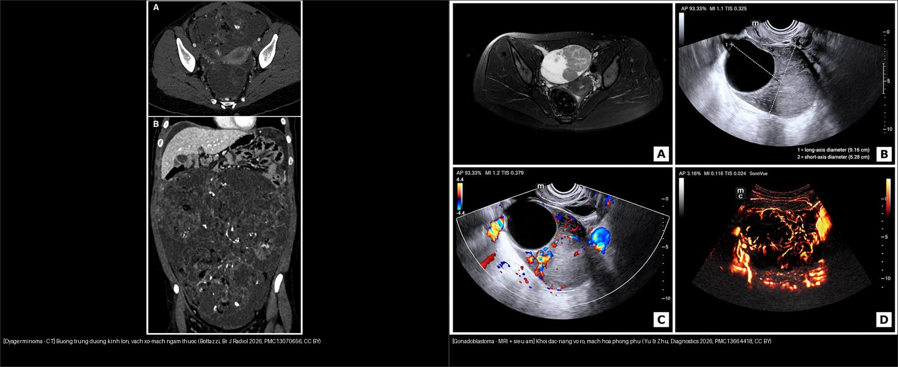
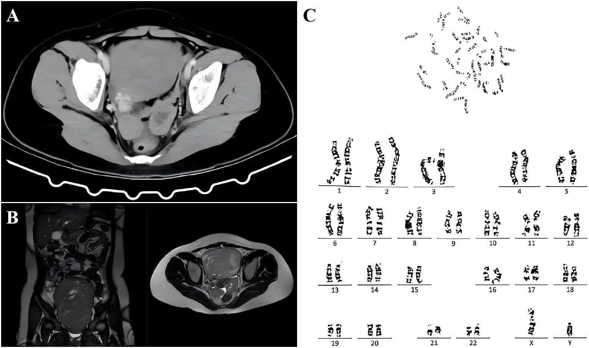
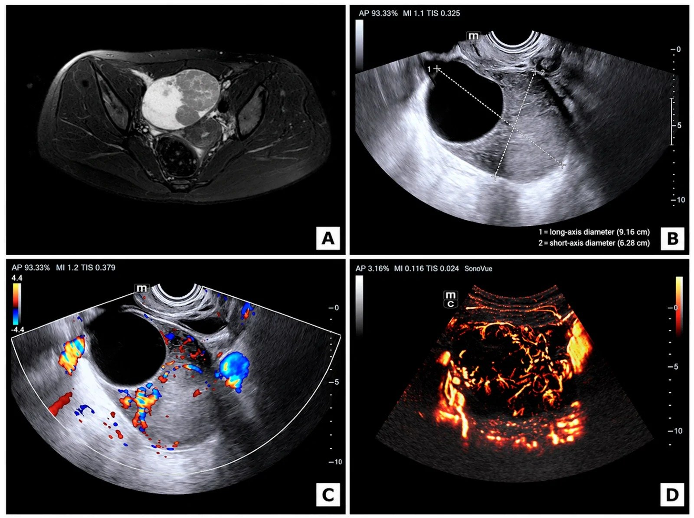
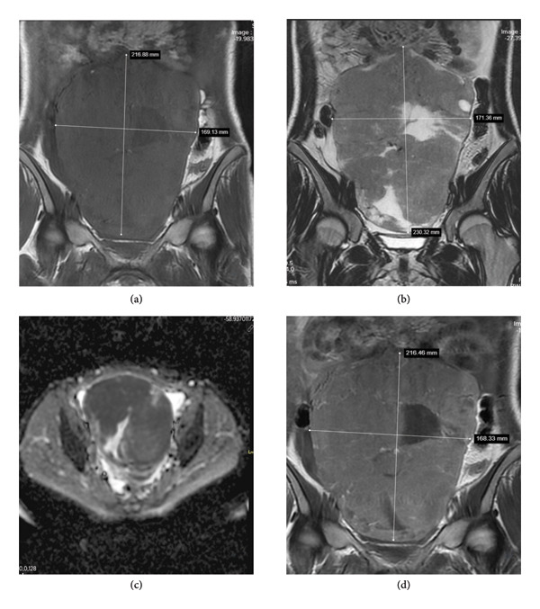
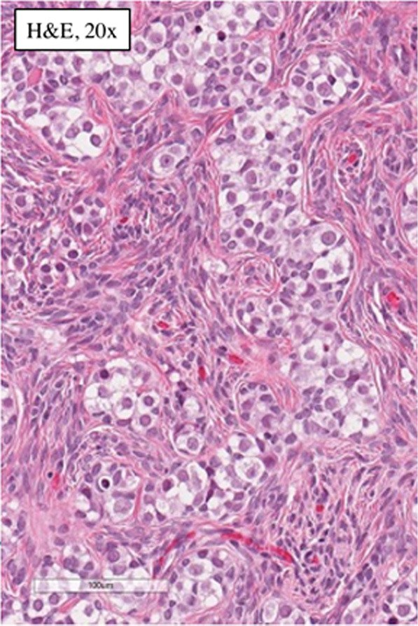

534 — Rối loạn phát triển giới 46,XY (Swyer) & u tế bào mầm/gonadoblastoma trên tuyến sinh dục dạng dải / 46,XY DSD (Swyer) & gonadoblastoma–dysgerminoma in streak gonads
Tags: pattern:u-buong-trung vung:buong-trung score:FIGO protocol:MRI-chau anatomy:gonad
Mức chắc chắn (certainty): tổng hợp y văn (literature synthesis) — nhóm tự biên từ y văn mở (Europe PMC/PMC) + các ca minh họa có giấy phép CC BY, không phải ca nguyên văn đơn lẻ.
Bài này trả lời một câu hỏi hay bị bỏ sót: một người lớn lên với hình thể nữ, vô kinh nguyên phát (primary amenorrhea) và không dậy thì, siêu âm/MRI thấy khối phần phụ — làm sao không bỏ lỡ chẩn đoán rối loạn phát triển giới 46,XY (DSD) kèm u tế bào mầm và kịp cắt tuyến sinh dục dự phòng trước khi di căn.
1. Tổng quan — vì sao tuyến sinh dục "dạng dải" sinh u, và vì sao ảnh khác nhau
- Bệnh học (pathology): loạn phát triển tuyến sinh dục không hoàn toàn/hoàn toàn (gonadal dysgenesis) là nhóm rối loạn phát triển giới 46,XY (46,XY differences/disorders of sex development — DSD). Tuyến sinh dục không biệt hóa thành tinh hoàn hoàn chỉnh → trở thành dải xơ mô đệm (streak gonad): chủ yếu mô đệm xơ, không có nang noãn trưởng thành, chỉ còn vài dây tế bào đệm hạt/vỏ. Dạng hoàn toàn mang tên hội chứng Swyer (46,XY complete gonadal dysgenesis — CGD).
- TẠI SAO bộ phận sinh dục là NỮ nhưng karyotype là 46,XY: tuyến sinh dục dạng dải không tiết được AMH (anti-Müllerian hormone) → ống Müller tồn tại (tử cung, vòi trứng); cũng không tiết testosterone → sinh dục ngoài nữ. Vì vậy bộ ba kinh điển: hình thể nữ + karyotype 46,XY + có tử cung (khác hẳn hội chứng không nhạy cảm androgen — AIS, KHÔNG có tử cung vì tinh hoàn còn tiết AMH).
- TẠI SAO sinh u ác: vùng GBY (gonadoblastoma Y region) cận tâm động NST Y; gen ứng viên TSPY1 (testis-specific protein Y-encoded 1) bị biểu hiện lạc chỗ trong mô tuyến sinh dục chưa biệt hóa → tế bào mầm (germ cell) tồn tại ở trạng thái "chín muộn" (OCT3/4 dương) → hình thành gonadoblastoma — một tổn thương TIỀN ÁC (premalignant) gồm tế bào mầm + tế bào đệm giống tế bào hạt/Sertoli + cặn vôi hóa. Một tỉ lệ gonoblastoma chuyển dạng thành dysgerminoma/seminoma xâm lấn.
- Ngưỡng định lượng then chốt (bắt buộc nhớ):
- Tuyến sinh dục loạn phát triển CÓ vật liệu NST Y (46,XY DSD) → nguy cơ tích lũy suốt đời gonadoblastoma + dysgerminoma 30–45% (tăng dần theo tuổi) (PMC13357980).
- Thể khảm 45,X/46,XY (mixed gonadal dysgenesis) → nguy cơ ~10–15% (PMC12593270).
- Gonadoblastoma xuất hiện HAI BÊN ở ~40% ca → luôn cắt cả hai tuyến sinh dục.
- Đột biến SRY ~15–20% ca loạn phát triển tuyến sinh dục 46,XY; MAP3K1 ~13–18%; các gen khác: DHH, NR5A1, DAX-1, STARD8, FTHL17; nói chung chỉ ~20–30% tìm được nguyên nhân phân tử.
- TẠI SAO ảnh khác nhau — vật lý tín hiệu (theo Argon):
- Dải xơ (streak gonad): mô sợi collagen giàu nước liên kết, nghèo tế bào → T2W tối, không cấu trúc nang, không ngấm thuốc — thường mảnh đến mức không định vị được trên siêu âm, MRI chỉ thấy dải mô mềm mảnh cạnh tử cung.
- Gonadoblastoma: thành phần cặn vôi hóa (calcareous concretions) trong ổ tế bào mầm → CT thấy vôi hóa là dấu chỉ điểm kinh điển; T1/T2 hỗn hợp do xen kẽ tế bào mầm lớn và mô đệm, ngấm thuốc.
- Dysgerminoma: tế bào lớn bào tương sáng xếp ổ + vách xơ–mạch (fibrovascular septa); vi tế bào dày đặc → DWI sáng + ADC thấp (điển hình ~0,8–1,0 ×10⁻³ mm²/s); vách xơ → T2 tối nhưng giàu mạch → ngấm mạnh sau tiêm. Khối đặc–hỗn hợp rất lớn, có thể vôi hóa ~10–15%.
- Cơ chế khối to nhanh: u tế bào mầm tăng sinh nhanh vượt cấp máu → hoại tử + xuất huyết trung tâm → phần nang/hỗn hợp trên ảnh; ca minh họa dưới đây khối tới 18–21 cm.
- Vì sao quan trọng: đây là ung thư đường sinh dục nhạy hóa trị (BEP) và có thể chữa khỏi nếu phát hiện sớm; nhưng nếu chỉ theo dõi "dậy thì muộn" mà không chụp/karyotype, u có thể di căn giai đoạn IIIC trước khi mổ (ca PMC13357980). Tử cung còn nguyên → vẫn có thể mang thai bằng noãn cho (oocyte donation) + IVF sau khi cắt tuyến sinh dục dự phòng.
2. Mẫu hình + chẩn đoán phân biệt theo bối cảnh & nội dung khối (Gamut)
- Bối cảnh cửa vào (lọc đầu tiên): nữ, vô kinh nguyên phát + không dậy thì + FSH/LH cao, estradiol thấp (suy sinh dục tăng gonadotropin — hypergonadotropic hypogonadism) → bắt buộc karyotype. Đây là dấu hiệu quyết định, không phải hình ảnh.
- Theo karyotype → 3 nhánh lớn:
- 46,XY + CÓ tử cung + tuyến sinh dục dạng dải = Swyer (CGD) → nguy cơ u cao nhất (30–45%).
- 46,XY + KHÔNG tử cung + phát triển vú + thiếu lông mu + tinh hoàn lạc chỗ = AIS → nguy cơ u thấp hơn nhưng vẫn cắt tuyến sinh dục.
- 45,X/46,XY bất đối xứng (một bên dải, một bên tinh hoàn loạn phát triển) = mixed gonadal dysgenesis → ~10–15%; có thể sinh dục ngoài mơ hồ.
- 46,XX + không tử cung = MRKH (bài
521); 46,XX + tuyến sinh dục dạng dải = suy buồng trứng sớm/Turner.
- Theo nội dung khối phần phụ (4 khuôn hình ảnh):
- Đặc, rất lớn, vách ngấm, DWI hạn chế: dysgerminoma (kèm LDH ± β-hCG nhẹ).
- Đặc–hỗn hợp có VÔI HÓA trong tuyến sinh dục dạng dải: gonadoblastoma (± chuyển dạng).
- Hỗn hợp còn mỡ/vôi răng: u quái (chưa trưởng thành — AFP tăng ~50%).
- Đặc–nang xuất huyết + nam hóa (testosterone cao): u tế bào Sertoli–Leydig hoặc gonadoblastoma tiết androgen.
- Mimic cần loại: xoắn buồng trứng/tuyến sinh dục (
530— đau cấp), u mầm buồng trứng ở người 46,XX bình thường (536— tuổi/ karyotype khác), u Krukenberg/di căn (535), khối phần phụ lành. - Câu gợi nhớ: "Vô kinh + nữ hình thể + FSH cao" → nghĩ KARYOTYPE trước khi nghĩ khối. Karyotype định số phận tuyến sinh dục; hình ảnh định thời điểm mổ.
3. Bảng so sánh phân biệt (ma trận đối chiếu)
| Thực thể (entity) | Hình ảnh điển hình (US/CT/MRI) | Chốt vào (rule-in) | Chốt loại (rule-out) | Gợi ý xác nhận |
|---|---|---|---|---|
| Swyer / 46,XY CGD — chưa có u | Tử cung nhỏ, âm đạo ngắn; dải xơ mảnh cạnh tử cung, T2W tối, không ngấm; tuyến sinh dục thường không thấy rõ trên siêu âm | Karyotype 46,XY + CÓ tử cung + FSH/LH cao + lông mu/vú kém | Karyotype 46,XX (→ MRKH/Turner) hoặc KHÔNG có tử cung (→ AIS); siêu âm/MRI bình thường KHÔNG loại trừ u | Karyotype (± SRY/FISH Y), FSH/LH/estradiol/testosterone |
| Gonadoblastoma (trên dải xơ) | Khối phần phụ đặc ± nang, có thể vôi hóa (điển hình trên CT); T1/T2 hỗn hợp, ngấm; có thể hai bên | Vôi hóa trong tuyến sinh dục loạn phát triển + 46,XY/Y material | Không có vật liệu Y + 46,XX bình thường → rất khó xảy ra | Mô bệnh (tế bào mầm + mô đệm + cặn vôi); cắt dự phòng là điều trị |
| Dysgerminoma (chuyển dạng từ gonadoblastoma) | Khối rất lớn, đặc–hỗn hợp, thùy, vách xơ–mạch T2 tối ngấm mạnh; DWI sáng/ADC thấp; vôi hóa ít hơn (10–15%) | Khối lớn đặc + vách ngấm + DWI hạn chế + LDH ± β-hCG tăng nhẹ | AFP tăng rõ → có thành phần túi noãn hoàng, không phải dysgerminoma thuần | Mổ + mô bệnh + hóa trị BEP; FIGO giai đoạn |
| AIS (46,XY, không nhạy cảm androgen) | KHÔNG có tử cung (âm đạo cùng cụt), tinh hoàn trong ổ bụng/bẹn, có thể nang; vú phát triển, KHÔNG lông mu | 46,XY + không tử cung + vú phát triển + lông mu thưa/không | Có tử cung → nghĩ Swyer (không phải AIS) | Testosterone cao, LH cao, karyotype; cắt tinh hoàn lạc chỗ |
| Mixed gonadal dysgenesis (45,X/46,XY) | Bất đối xứng: một bên dải xơ, một bên tinh hoàn loạn phát triển; sinh dục ngoài mơ hồ; có thể sa ống Müller một bên | Karyotype khảm 45,X/46,XY + bất đối xứng tuyến sinh dục | Karyotype đơn 46,XY hoàn toàn → CGD | Karyotype khảm, nguy cơ 10–15%, cắt tuyến sinh dục dự phòng |

Trái — dysgerminoma trên CT (bé gái 19 tuổi): khối lớn, cấu trúc nhiều vách với vách xơ–mạch ngấm thuốc dày mỏng khác nhau. Phải — gonadoblastoma: khối đặc–nang vỏ rõ, mạch hóa phong phú trên Doppler/CEUS. Nguồn: Bottazzi S et al., Br J Radiol 2026, PMC13070656 (CC BY 4.0) + Yu J & Zhu J, Diagnostics 2026, PMC13664418 (CC BY 4.0). Ảnh ghép letterbox, giữ nguyên tỷ lệ.Dấu hiệu chốt đọc ảnh (theo từng chuỗi xung)
- Siêu âm (US): tuyến sinh dục dạng dải thường không định vị được; khối lớn đặc–nang ± mạch hóa → nghĩ u tế bào mầm. US/CEUS giúp đánh giá mạch hóa (gonadoblastoma/u mầm tăng sinh mạch).
- CT: giá trị nhất để phát hiện VÔI HÓA (gonadoblastoma) và đánh giá di căn phúc mạc/hạch/tràn dịch.
- MRI (chốt): (1) Giải phẫu Müller — CÓ hay KHÔNG có tử cung quyết định Swyer vs AIS; (2) vách xơ–mạch T2 tối ngấm mạnh = dysgerminoma; (3) DWI/ADC — khối tế bào dày đặc → hạn chế khuếch tán; (4) tìm khối hai bên.
- Tumor marker: dysgerminoma → LDH tăng, β-hCG có thể tăng nhẹ; AFP bình thường (nếu AFP tăng rõ → nghĩ thành phần túi noãn hoàng). Ca minh họa: β-hCG 66,76 mIU/mL, CA125 545,6 U/mL (PMC13574655).
4. Protocol chụp + hệ phân độ/điểm chuẩn hóa
- Chỉ định chụp (khi nào nghĩ tới bài này): nữ ≥ 13–14 tuổi chưa dậy thì/chưa hành kinh kèm FSH/LH cao → karyotype NGAY; nếu karyotype 46,XY (hoặc khảm có Y) → siêu âm bụng–chậu + MRI chậu có/không cản quang để lập bản đồ Müller + tìm tuyến sinh dục/u; CT khi nghi di căn/đánh giá phổi.
- Protocol MRI chậu: T2W 3 mặt phẳng (giải phẫu Müller + tử cung), T1W (máu/mỡ), T1 fat-sat sau tiêm (vách ngấm), DWI b = 800–1000 + ADC (độ dày tế bào). Vú/tử cung ở Swyer: tử cung nhỏ, nội mạc mỏng do thiếu estrogen.
- Nguyên tắc vàng: siêu âm/MRI bình thường KHÔNG loại trừ u ở người loạn phát triển tuyến sinh dục có vật liệu Y → cắt tuyến sinh dục dự phòng dựa trên karyotype, không dựa trên ảnh.
- Sinh hóa – nội tiết: FSH, LH, estradiol, testosterone, AMH (giúp phân biệt: AMH thấp/none ở dải xơ vs còn tinh hoàn), karyotype (± SRY, FISH Y, TSPY, microarray).
- Hệ phân độ: u tế bào mầm dùng FIGO (I–IV) cho buồng trứng; đa số dysgerminoma FIGO I–II sống > 95%, chữa khỏi bằng phẫu thuật ± hóa trị BEP.
flowchart TD
A["Nữ ≥ 13–14t: vô kinh nguyên phát<br/>không dậy thì, FSH/LH cao"] --> B["Karyotype + FSH/LH/E2/testosterone/AMH"]
B --> C{"Karyotype?"}
C -->|46,XY| D{"MRI: CÓ tử cung?"}
C -->|46,XX| E["MRKH / suy buồng trứng sớm<br/>(bài 521)"]
C -->|"45,X/46,XY khảm"| F["Mixed gonadal dysgenesis<br/>nguy cơ 10–15%"]
D -->|Có| G["Swyer syndrome (46,XY CGD)<br/>tuyến sinh dục dạng dải"]
D -->|Không| H["AIS (46,XY, không nhạy cảm androgen)<br/>KHÔNG có tử cung"]
G --> I["Nguy cơ gonadoblastoma/dysgerminoma<br/>30–45% suốt đời"]
F --> I
H --> J["Cắt tinh hoàn lạc chỗ"]
I --> K["CẮT HAI TUYẾN SINH DỤC DỰ PHÒNG<br/>ngay khi xác chẩn (bilateral gonadectomy)"]
K --> L["Liệu pháp estrogen<br/>+ tư vấn sinh sản (noãn cho + IVF,<br/>tử cung còn nguyên)"]
K --> M{"Mô bệnh có u?"}
M -->|Gonadoblastoma/chưa xâm lấn| N["Cắt là CHỮA KHỎI"]
M -->|Dysgerminoma xâm lấn| O["FIGO + hóa trị BEP<br/>± nạo hạch/omectomy"]
5. Biến thể bình thường và cạm bẫy
- Cạm bẫy 1 — "siêu âm bình thường thì yên tâm": sai. Tuyến sinh dục dạng dải thường không thấy trên siêu âm; u nhỏ cũng có thể ẩn. Quyết định cắt dự phòng theo karyotype, không theo ảnh.
- Cạm bẫy 2 — "dậy thì muộn sinh lý" che u: thiếu máu cục bộ do chậm trễ; nếu không đo FSH/LH + karyotype, u có thể tiến tới giai đoạn IIIC di căn (ca PMC13357980).
- Cạm bẫy 3 — phân biệt Swyer vs AIS bằng ảnh: sự hiện diện của TỬ CUNG là chốt hình ảnh — Swyer CÓ tử cung, AIS KHÔNG có tử cung (âm đạo cùng cụt). Nhầm hướng này đổi hoàn toàn tư vấn.
- Cạm bẫy 4 — u tiết hormon che dấu: gonadoblastoma có thành phần đệm có thể tiết estrogen/androgen → gây dậy thì/nam hóa → che mất chẩn đoán loạn phát triển (ca thứ hai trong gia hệ PMC10856735). Nam hóa (testosterone/β-hCG cao) không loại trừ gonadoblastoma.
- Cạm bẫy 5 — nghĩ 46,XX thì loại gonadoblastoma: vẫn có ca gonadoblastoma 46,XX ngoại vi (hiếm) — cần tìm vật liệu Y ẩn (SRY FISH/STR/TSPY); không nên bỏ qua dù karyotype 46,XX.
- Biến thể/bài học: tử cung nhỏ + nội mạc mỏng là bình thường trong Swyer (thiếu estrogen), không đọc nhầm teo bệnh lý; sau estrogen thay thế tử cung sẽ phát triển.
- Cạm bẫy mặt cắt: khối lớn đẩy lệch tử cung/bàng quang — luôn dựng lại giải phẫu Müller trên đa mặt phẳng trước khi kết luận "khối buồng trứng" đơn thuần.
6. Tự lượng giá — Blind Quiz ngay trên trang tĩnh
Ca 1 — Bé gái 16 tuổi, chưa hành kinh, khối bụng–chậu lớn.

- Gợi ý lâm sàng: nữ 16 tuổi, vô kinh nguyên phát, khối bụng–chậu phát hiện 1 năm trước (siêu âm lần đầu: khối đặc–nang 6,5 × 4,2 cm + tử cung nhỏ), nay khối 18 × 13 × 10 cm. β-hCG 66,76 mIU/mL, CA125 545,6 U/mL.
- Câu hỏi: Panel A (CT) và C (karyotype) nói gì? Tử cung có hay không? 3 chẩn đoán phân biệt và dấu hiệu chốt hành động?
Bấm để hiện đáp án (findings + chẩn đoán)
- Findings: (A) CT bụng–chậu cản quang: khối hai bên buồng trứng lớn, gợi ý dysgerminoma, kèm tràn dịch màng phổi phải lượng ít, dịch ổ bụng–chậu ít, giãn nhẹ thận phải; (B) MRI chậu coronal/axial: khối hai bên buồng trứng – bụng–chậu chưa rõ bản chất; (C) karyotype 46,XY.
- Chẩn đoán: Hội chứng Swyer (46,XY complete gonadal dysgenesis) biến chứng dysgerminoma hai bên xâm lấn bàng quang và trực tràng. Cơ chế: tuyến sinh dục dạng dải mang vật liệu Y → gonadoblastoma chuyển dạng dysgerminoma; β-hCG tăng nhẹ là gợi ý u tế bào mầm.
- Hành động chốt: cắt hai tuyến sinh dục dự phòng ngay khi xác chẩn + hóa trị BEP theo giai đoạn; tử cung còn → tư vấn mang thai bằng noãn cho.
- Phản biện (fidelity): khối hai bên rất lớn + tràn dịch + β-hCG tăng nhẹ điển hình cho dysgerminoma, nhưng AFP phải bình thường mới loại thành phần túi noãn hoàng; nếu AFP tăng → đổi phác đồ.
- Nguồn ảnh: Feng Y et al., Front Oncol 2026 (PMC13574655) — CC BY 4.0.
Ca 2 — Bé gái 18 tuổi, khối phần phụ trái lớn nhanh, mạch hóa mạnh.

- Gợi ý lâm sàng: nữ 18 tuổi, khối phần phụ trái tăng nhanh (testosterone 18,7 → > 52 nmol/L trong ~3,5 tháng), karyotype ngoại vi 46,XX.
- Câu hỏi: hình thái khối (đặc hay nang)? Dấu hiệu nào gợi gonadoblastoma chuyển dạng? Vì sao vẫn phải tìm vật liệu Y?
Bấm để hiện đáp án (findings + chẩn đoán)
- Findings: (A) MRI chậu axial: khối đặc–nang buồng trứng trái bờ rõ; (B) siêu âm qua trực tràng: khối đặc–nang vỏ rõ (đường kính dài 9,16 cm × ngắn 6,28 cm); (C) Doppler màu: tín hiệu mạch trong khối; (D) CEUS: tăng tưới máu không đồng nhất, vi mạch trong u phong phú.
- Chẩn đoán: Gonadoblastoma buồng trứng "dissecting" kèm chuyển dạng dysgerminoma; nam hóa do thành phần u tiết androgen.
- Chốt/loại: khối đặc–nang bờ rõ + mạch hóa mạnh + tăng nhanh + nam hóa gợi gonadoblastoma; T2 rất tối đều, không ngấm sẽ hướng fibroma (lành) — ở đây ngấm mạnh nên loại.
- Cảnh báo trung thực nguồn: ca này karyotype ngoại vi 46,XX — gonadoblastoma 46,XX hiếm; tác giả không làm xét nghiệm tìm vật liệu Y ẩn (SRY FISH/STR/TSPY). Vì vậy phải tìm Y ẩn trước khi kết luận, và không được vì "46,XX" mà loại gonadoblastoma.
- Nguồn ảnh: Yu J & Zhu J, Diagnostics 2026 (PMC13664418) — CC BY 4.0.
Ca 3 — Khối bụng–chậu lớn ở thiếu nữ, MRI có vách ngấm + DWI hạn chế.

- Gợi ý lâm sàng: thiếu nữ, tiền sử gia hệ hội chứng Swyer, khối bụng–chậu lan tới rốn.
- Câu hỏi: kích thước khối? Chuỗi xung nào chốt độ dày tế bào và vách ngấm? Chẩn đoán?
Bấm để hiện đáp án (findings + chẩn đoán)
- Findings: (a) T1W coronal không tiêm: khối giảm tín hiệu không đồng nhất, từ chậu tới ngang rốn, ~21 × 19 cm; (b) T2W: hỗn hợp nang–đặc tín hiệu thay đổi; (c) DWI + ADC: hạn chế khuếch tán ở phần đặc (gợi ý độ dày tế bào cao); (d) T1W sau tiêm: ngấm mạnh phần đặc.
- Chẩn đoán: Dysgerminoma xâm lấn trên hội chứng Swyer gia hệ — khối lớn đặc, DWI hạn chế, ngấm mạnh; phù hợp u tế bào mầm.
- Chốt: khối > 20 cm + phần đặc DWI sáng/ADC thấp + ngấm mạnh = u mầm tế bào dày đặc (dysgerminoma); cần mổ + mô bệnh.
- Nguồn ảnh: Oğlak SC et al., Case Reports in Medicine 2026 (PMC12811826) — CC BY 4.0.
Ca 4 — Đối chiếu mô bệnh: "dải xơ" chứa gì?

- Gợi ý lâm sàng: trẻ loạn phát triển tuyến sinh dục hỗn hợp (karyotype 45,X/46,XY), cắt tuyến sinh dục dự phòng.
- Câu hỏi: mô bệnh cho thấy hiện tượng tiền ác nào trong dải xơ? Vì sao phải cắt cả hai bên?
Bấm để hiện đáp án (findings + chẩn đoán)
- Findings: H&E ×20 — dải xơ tuyến sinh dục chứa gonadoblastoma: các ổ tế bào mầm lớn (bào tương sáng, nhân rõ) xen tế bào đệm nhỏ giống tế bào hạt/Sertoli trong mô đệm xơ — tổn thương tiền ác điển hình.
- Chẩn đoán: Gonadoblastoma trên tuyến sinh dục dạng dải (mixed gonadal dysgenesis, 45,X/46,XY) — cắt trước khi xâm lấn là chữa khỏi.
- Vì sao hai bên: gonadoblastoma hai bên ~40% → luôn cắt cả hai tuyến sinh dục.
- Nguồn ảnh: Trainavičius I et al., Acta Medica Lituanica 2022 (PMC9799003) — CC BY 4.0.
Bài liên quan chéo
- 500 – Tổng quan Hệ Vú & Sản Phụ khoa
- 536 – U mầm & u mô đệm–dây sinh dục buồng trứng (u mầm ở người 46,XX bình thường)
- 521 – Hội chứng Mayer–Rokitansky (MRKH) (46,XX, không tử cung)
- 528 – Dị dạng tử cung bẩm sinh
- 530 – O-RADS: nang & khối phần phụ
- 535 – Ung thư buồng trứng, phúc mạc & u Krukenberg
- 638 – Khối bìu–tinh hoàn ở trẻ
Ảnh
- Tên file
NNN_slug_Modality_SourceID.jpg; nguồn + giấy phép từng ảnh ởimages/CREDITS.md. - Ảnh ghép đối chiếu:
images/composite_dysgerminoma-vs-gonadoblastoma.jpg(letterbox, giữ nguyên tỷ lệ). - Nguồn tham khảo đầy đủ (link gốc) ở
sources.md.
Không dùng để chẩn đoán độc lập khi chưa có người hướng dẫn.